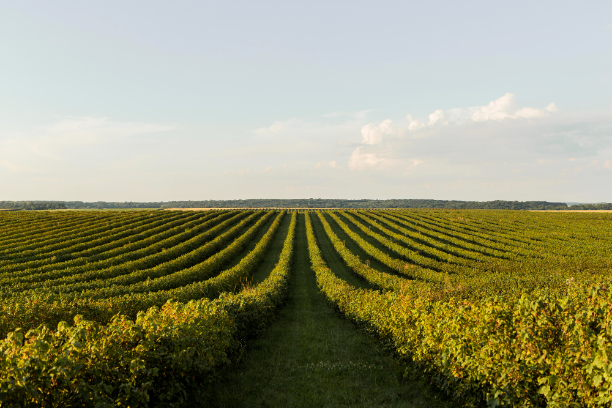

Fome zero e agricultura sustentável
Um dos 17 Objetivos de Desenvolvimento Sustentável (ODS) adotados pelos 195 Estados membros das Nações Unidas
ODS 2
O seu o objetivo é abordar a questão da fome e da insegurança alimentar em todo o mundo, promovendo o acesso a alimentos nutritivos e suficientes para todas as pessoas. Isso envolve não apenas fornecer alimentação adequada, mas também garantir que a produção e o consumo de alimentos sejam sustentáveis e resilientes, tanto do ponto de vista econômico quanto ambiental. O ODS 2 reconhece que a fome e a insegurança alimentar são problemas multifacetados que requerem uma abordagem holística, que envolva governos, organizações internacionais, sociedade civil e setor privado. O objetivo busca estabelecer uma base para sistemas alimentares mais equitativos, sustentáveis e resilientes, visando um mundo onde todas as pessoas possam ter acesso a alimentos nutritivos e em quantidade suficiente para uma vida saudável e produtiva.
Muitas partes do mundo enfrentam recessões brutais, prejudicando o acesso aos alimentos e aumentando ainda mais a inseguranca alimentar

2,37 bilhões de pessoas estão sem alimento ou incapazes de comer um dieta saudável e equilibrada

149,2 milhões de crianças com menos de 5 anos estão desnutridas. O atraso no crescimento já afeta mais de 1 a cada 5 crianças
Segundo o relatório "O Estado da Segurança Alimentar e Nutrição no Mundo (SOFI)" da ONU, 70,3 milhões de pessoas estavam em insegurança alimentar moderada e 21,1 milhões en insegurança alimentar grave no Brasil em 2022
Metas da ODS 2
2.1
Acabar com a fome e garantir o acesso de todas as pessoas, em particular os pobres e pessoas em situações vulneráveis, incluindo crianças, a alimentos seguros, nutritivos e suficientes durante todo o ano;
2.2
Acabar com todas as formas de desnutrição, incluindo atingir, até 2025, as metas acordadas internacionalmente sobre nanismo e caquexia em crianças menores de cinco anos de idade, e atender às necessidades nutricionais dos adolescentes, mulheres grávidas e lactantes e pessoas idosas;
2.3
Dobrar a produtividade agrícola e a renda dos pequenos produtores de alimentos particularmente das mulheres, povos indígenas, agricultores familiares, pastores e pescadores, inclusive por meio de acesso seguro e igual à terra, outros recursos produtivos e insumos, conhecimento, serviços financeiros, mercados e oportunidades de agregação de valor e de emprego não agrícola;
2.4
Garantir sistemas sustentáveis de produção de alimentose implementar práticas agrícolas resilientes, que aumentem a produtividade e a produção, que ajudem a manter os ecossistemas, que fortaleçam a capacidade de adaptação às mudanças climáticas, às condições meteorológicas extremas, secas, inundações e outros desastres, e que melhorem progressivamente a qualidade da terra e do solo;
2.5
Garantir o acesso e a repartição justa dos benefícios decorrentes da utilização dos recursos genéticos manter a diversidade genética de sementes, plantas cultivadas, animais de criação e domesticados e suas respectivas espécies selvagens, inclusive por meio de bancos de sementes e plantas diversificados e bem geridos em nível nacional, regional e internacional,
2.a
Aumentar o investimento, inclusive via o reforço da cooperação internacional, em infraestrutura rural, pesquisa e extensão de serviços agrícolas,desenvolvimento de tecnologia, e os bancos de genes de plantas e animais, para aumentar a capacidade de produção agrícola nos países em desenvolvimento, em particular nos países menos desenvolvidos;
2.b
Corrigir e prevenir as restrições ao comércio e distorções nos mercados agrícolas mundiais,incluindo a eliminação paralela de todas as formas de subsídios à exportação e todas as medidas de exportação com efeito equivalente, de acordo com o mandato da Rodada de Desenvolvimento de Doha;
2.c
Adotar medidas para garantir o funcionamento adequado dos mercados de commodities de alimentos e seus derivadose facilitar o acesso oportuno à informação de mercado, inclusive sobre as reservas de alimentos, a fim de ajudar a limitar a volatilidade extrema dos preços dos alimentos.
Agricultura sustentável
O que é?
É um método de cultivo e produção de alimentos que busca atender às necessidades presentes sem comprometer a capacidade das gerações futuras de suprir suas próprias necessidades. Ela é baseada em princípios que visam equilibrar a produção agrícola com a conservação dos recursos naturais, a proteção do meio ambiente e o bem-estar social das comunidades envolvidas. Além disso, a agricultura sustentável considera o contexto social e econômico das comunidades agrícolas, visando melhorar a qualidade de vida dos agricultores, garantindo acesso a alimentos saudáveis e promovendo o desenvolvimento rural.
Como ela pode ser viabilizada?
- Rotação de Culturas e Diversificação
- Manejo Integrado de Pragas
- Agricultura de Conservação
- Uso Eficiente de Água
- Agroflorestas e Sistemas Agroecológicos
- Uso de Cultivares Adaptadas
- Fertilização Orgânica e Nutrientes Ciclados
- Conservação da Biodiversidade
- Apoio a Agricultores Locais
- Tecnologia e Inovação
- Educação e Capacitação